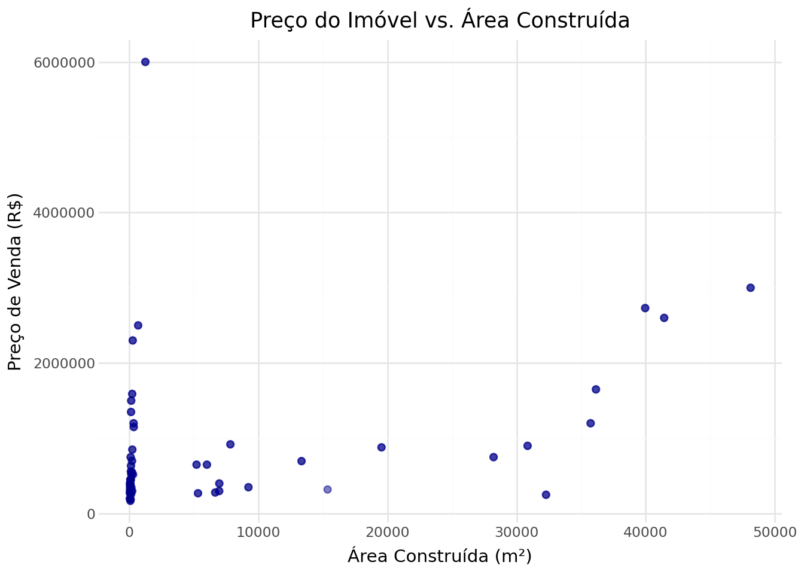

Extração de Dados de Imóveis: Um Guia Passo a Passo
Author
Assistente
Introdução
Este documento explica, de forma simples e detalhada, como funciona o código em Python responsável por extrair informações de imóveis de páginas da internet (um processo conhecido como web scraping). O código que estamos analisando está no arquivo 04_colmeia_extract_content.py.
Imagine que você salvou várias páginas de uma imobiliária no seu computador. Ler uma por uma e anotar os preços, números de quartos e áreas no Excel levaria dias! O que este programa faz é exatamente isso: ele “lê” os arquivos HTML (o formato das páginas da web), procura pelos “cartõezinhos” (cards) de cada imóvel, extrai as informações importantes e monta uma planilha automaticamente.
Abaixo, vamos destrinchar cada parte desse processo.
Passo 1: Preparando as Ferramentas (Importações)
No topo do código, o programador importa várias “caixas de ferramentas” (bibliotecas) que o Python vai usar: - re: Usada para encontrar padrões de texto (como buscar onde tem números). - datetime: Usada para saber a data de hoje. - Path: Ajuda a lidar com caminhos de arquivos e pastas no computador. - pandas: A ferramenta mais famosa do Python para lidar com tabelas (como se fosse um Excel dentro do Python). - BeautifulSoup: Uma ferramenta fantástica que sabe como ler códigos HTML bagunçados e encontrar informações dentro deles.
Em seguida, o código configura os diretórios de entrada (onde estão os HTMLs salvos) e saída (onde a tabela CSV final será salva).
Passo 2: Limpando a Sujeira (Funções Auxiliares de Texto)
Quando lemos um texto da internet, muitas vezes ele vem com espaços em branco sobrando, quebras de linha ou caracteres estranhos. Para isso, o código cria funções de limpeza:
clean_text(value): Pega um pedaço de texto e remove espaços duplos e invisíveis. Se não tiver nada, ele retorna “Vazio” (None).
text_first(card, selector): Procura o primeiro texto que combine com um “seletor” (uma regra de busca visual do HTML) dentro do anúncio.
text_second_span(card, icon_class): Os anúncios geralmente têm ícones (como o desenho de uma cama para quartos). O texto numérico do quarto costuma ficar escondido no segundo pedaço de texto (o span) próximo a esse ícone. Essa função busca exatamente ali.
Passo 3: Entendendo os Números
No Brasil, escrevemos mil e quinhentos reais assim: 1.500,00. Mas o computador (que fala inglês por padrão) entende assim: 1500.00. O código tem funções para traduzir isso:
parse_number_ptbr(text): Pega um texto como “1.234,56”, tira os pontos, troca a vírgula por ponto e transforma em um número matemático (chamado de float).
parse_int(text): Pega um texto como “3 Suítes” e puxa apenas o número “3” inteiro.
parse_valor_venda(valor_raw): Essa é a mais esperta! Às vezes o site tem o valor do condomínio e do aluguel juntos. Essa função procura especificamente o número que está entre o “R$” e a letra “V” (que indica Venda). Se tiver um preço antigo e um novo, ela pega o último.
Passo 4: O Coração do Código (Extraindo um Anúncio)
A função extract_card(card) é onde a mágica acontece individualmente para cada imóvel. Ela recebe o pedaço de HTML de um único anúncio (o card) e cria um “dicionário” (uma lista de características com nomes):
Pega o ID (código) do imóvel.
Pega o título e a localização (bairro/cidade).
Pega os quartos, suítes, banheiros, vagas de garagem, área do terreno e área construída, usando as funções de limpeza que vimos no Passo 2.
Por fim, passa tudo isso pelas funções matemáticas do Passo 3, para garantir que as áreas e os preços sejam guardados como números reais, permitindo que a gente faça contas com eles depois.
Passo 5: Lendo a Página Inteira e a Pasta Inteira
Agora que sabemos ler um anúncio, o código amplia o trabalho:
A função extract_from_file(html_file) abre um arquivo HTML inteiro da imobiliária, encontra todos os anúncios daquela página (buscando por div.muda_card1) e usa o coração do código (extract_card) em cada um deles. Ao final, transforma tudo em uma tabela provisória do pandas.
A função final e principal, extract_directory_to_csv(), é o chefão. Ela vai na pasta de entrada, olha todos os arquivos HTML lá dentro e faz um laço de repetição (um loop). Ela extrai os imóveis de todos os arquivos, junta todas as tabelas provisórias em uma só tabela gigantesca, descobre se era Venda ou Locação (olhando os nomes dos arquivos) e salva tudo no formato CSV (que abre no Excel) colocando a data de hoje no nome.
Execução: Colocando a Mão na Massa
Agora que entendemos a teoria, vamos importar esse script, executar a função principal e ver os dados extraídos!
import sysfrom pathlib import Pathimport pandas as pdfrom IPython.display import display# Adicionamos a pasta do script ao sistema para podermos importá-loscript_path = Path('/home/marco/mba_genai/DSLLM/aula02/lessons/03_imoveis_http/src/04_colmeia_extract_content.py')sys.path.append(str(script_path.parent))# Importamos o módulo Python dinamicamenteimport importlib.utilspec = importlib.util.spec_from_file_location("extractor", script_path)extractor = importlib.util.module_from_spec(spec)spec.loader.exec_module(extractor)# 1. Executamos a extração (Isso varre os HTMLs e gera o CSV)csv_gerado = extractor.extract_directory_to_csv()# 2. Lemos o CSV que acabou de ser gerado para visualizar no documentodf_imoveis = pd.read_csv(csv_gerado, sep=";")# 3. Mostramos as 5 primeiras linhas da tabeladisplay(df_imoveis.head())
Table 1: Primeiras linhas da tabela de imóveis extraída automaticamente dos arquivos HTML.
id
valor_raw
titulo
local
desc
dorm
suite
banheiro
garagem
area_terr
area_const
valor
arquivo_html
0
3220
R$ 250.000,00 V
APARTAMENTO À VENDA EM DOURADOS/MS
Jardim Maringá - Dourados/MS
Apartamento térreo semi mobiliado à venda no R...
2.0
NaN
1.0
1.0
NaN
NaN
250000.0
colmeia_2026-05-19_venda_001.html
1
3219
R$ 450.000,00 V
CASA À VENDA EM DOURADOS/MS
Jardim Água Boa - Dourados/MS
Localizada próxima à Rua Hayel Bon Faker, esta...
4.0
1.0
3.0
2.0
NaN
NaN
450000.0
colmeia_2026-05-19_venda_001.html
2
3218
R$ 950.000,00 V
CASA À VENDA EM DOURADOS/MS
Jardim Itaipú - Dourados/MS
Localizada em um dos bairros nobres da cidade,...
3.0
1.0
3.0
2.0
NaN
NaN
950000.0
colmeia_2026-05-19_venda_001.html
3
3208
R$ 230.000,00 V
CASA À VENDA EM DOURADOS/MS
Vila Toscana II - Dourados/MS
Casa à venda na Vila Toscana! Apta a financiam...
2.0
NaN
1.0
1.0
180.0
NaN
230000.0
colmeia_2026-05-19_venda_001.html
4
3207
R$ 150.000,00 V
APARTAMENTO À VENDA EM DOURADOS/MS
Chácaras Trevo - Dourados/MS
Apartamento à venda no Residencial Itajubá I! ...
2.0
NaN
1.0
1.0
NaN
NaN
150000.0
colmeia_2026-05-19_venda_001.html
Como podemos observar na Table 1 acima, as informações de preço, áreas e quartos foram organizadas de forma estruturada.
Visualizando os Dados com Plotnine
Para finalizar, vamos fazer um gráfico para verificar se faz sentido: será que imóveis com maior área construída custam mais caro? Vamos usar a biblioteca plotnine para criar um gráfico de dispersão elegante.
from plotnine import ggplot, aes, geom_point, labs, theme_minimal# Removemos as linhas que não têm preço ou área construída preenchidos para não dar erro no gráficodf_grafico = df_imoveis.dropna(subset=['valor', 'area_const'])# Criamos o gráfico de dispersãografico = ( ggplot(df_grafico, aes(x='area_const', y='valor'))+ geom_point(color='darkblue', alpha=0.5, size=2)+ labs( title="Preço do Imóvel vs. Área Construída", x="Área Construída (m²)", y="Preço de Venda (R$)" )+ theme_minimal())# Mostramos o gráficodisplay(grafico)

Figure 1: Relação entre o Preço de Venda (R$) e a Área Construída (m²) dos imóveis extraídos.
A Figure 1 confirma a nossa intuição! Em geral, podemos observar como os imóveis com mais área tendem a atingir os valores mais elevados no eixo Y.